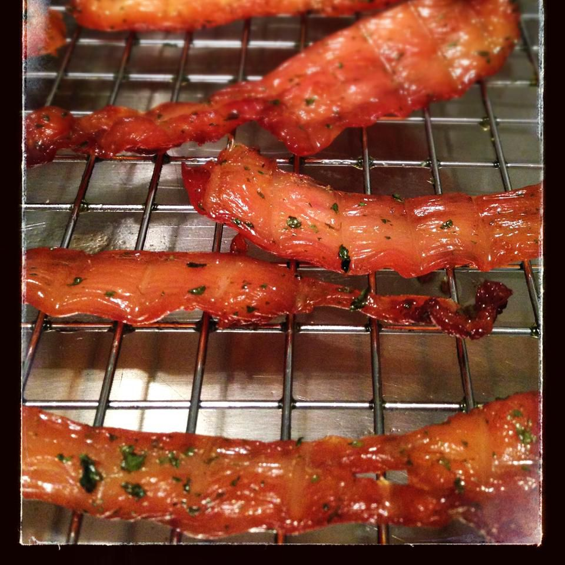

Spicy Chicken Jerky

Chicken jerky? Who knew? And who knew you could make jerky in an air fryer? Plan ahead for this spicy snack as the
chicken needs time to marinate and air-fry.
Ingredients
- 2 (5 ounce) boneless chicken breasts, cut into strips
- ½ cup mojo criollo marinade (such as Goya®)
- 2 teaspoons Cajun seasoning
- 6 wooden skewers
Steps
- Combine chicken strips, marinade, and Cajun seasoning in a resealable
plastic bag. Refrigerate for 8 hours to overnight.
- Measure skewers to fit across the air fryer basket, slightly overlapping
the edge. Trim off excess length.
- Preheat the air fryer to 180 degrees F (80 degrees C) for 10 minutes.
- Thread chicken strips onto skewers, leaving room in between each
strip, while the air fryer is preheating.
- Air fry for 1 hour 15 minutes. Adjust cooking time as most air fryers
have a maximum setting of 30 minutes. Rearrange the skewers during
the reset time.
- Increase temperature to 200 degrees F (95 degrees C) and air fry for an
additional 15 minutes.
- Remove strips to a paper towel-lined storage container. Seal. Allow to
rest overnight before serving.